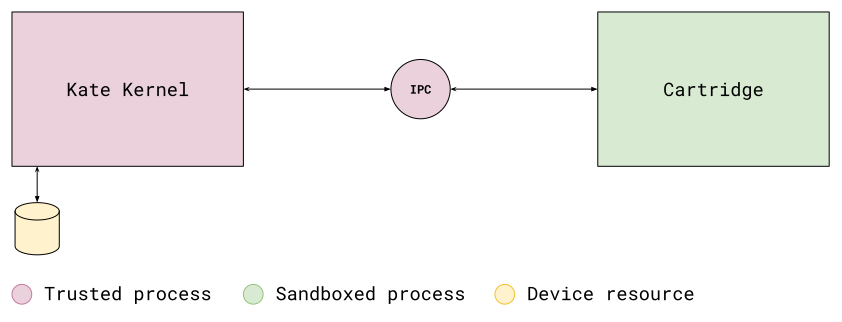

Overview#
Kate is a security-oriented platform. In order to protect users safety and privacy, it makes heavy use of capabilities and sandboxing, as well as isolating components to prevent a faulty component from compromising the entire system.
On top of that, Kate runs on top of a web browser. This means that Kate runs in any platform that has a web browser, often with similar behaviour, but it also means Kate does not have access to any of the device’s native functionality directly. Likewise, nor does your cartridge.
This design helps protect both developers and players, but it also has implications to how you write games for Kate, and how they run on the device or emulator.
Capabilities#
In access-list-based operating systems, like Linux, MacOS, and Windows, what an application can do depends on which user is running the application. Thus, applications can do anything the user can do—that includes deleting or modifying any file in the device. Security is achieved by creating restricted users and running applications with these restricted users; however, managing multiple users is often cumbersome, so hardly any end-user does it.
In capability-based operating systems, like Android or iOS, what an application can do depends on what the OS considers “universally accessible”, and any additional features the user grants that specific application. An application that has not been granted the “read photos” feature cannot read the photos in the device, even though the user can. Likewise, not granting “use camera” means you don’t have to worry about an application using the camera in a way you don’t want it to.
Kate is a capability-based system, but it has less universally accessible features than phone operating systems. This is because we encourage players to download and run any cartridge they find on the internet, without having to do any risk assessment before running it. So, by default, cartridges can:
Display things on the screen;
Play audio (from local data);
Play videos (from local data);
Read data bundled with the cartridge, but not modify anything;
Read Kate gamepad or pointer input (this is not the device’s gamepad/pointer!);
Store up to 64 MB in an isolated storage partition for that specific cartridge;
Anything other than this requires the cartridge to ask the player for permission first. That includes storing more data in the storage partition, or downloading/sending data over the internet. And even things like opening another page when the player clicks a link.
Bridges#
Due to these heavy restrictions, no web game can run in Kate as a cartridge as-is. Even simple hypertext fiction, that would work as a local HTML page, would fail to run in Kate because having a link open a different HTML page is not allowed (to avoid phishing attacks). Likewise, having an image in an HTML page that points to a specific file isn’t possible because there are no URLs or files involved when running a cartridge.
To lessen the burden of porting games not meant to run in Kate to the platform, Kate provides “bridges”. These are small snippets of code injected in the cartridge process which translate common web APIs and features into a Kate-compatible form.
For example, the network proxy bridge allows one to use a regular
<img src="bg.png"> tag in a web page, and have that translated to load
the file from the cartridge’s binary data instead. Audio, fetch, and friends
receive a similar treatment from this bridge.
The local storage proxy and indexedDB proxy allows one to use regular web storage APIs while translating all of those calls into operations on the small 64 MB storage partition the cartridge has access to.
Bridges are likely the place where things can go awry. If things work when you run it in a web browser, but not as a Kate cartridge, it might be that you’re missing a bridge, or the bridge doesn’t offer support for the specific usage that your web game expects.
For example, some engines load additional JavaScript code by creating a
synchronous <script> tag and expecting that, after that tag is added
to the document, execution will only proceed when the browser finishes
parsing and executing the code. This can’t work in Kate because we first
need to read the code from the cartridge, and there’s no way of doing that
synchronously.
Process topology#
Kate runs trusted and sandboxed processes. The only trusted process is the Kate Kernel, which controls the untrusted processes, accesses and manipulates device resources, and runs with wider permissions. Sandboxed processes, such as the process running cartridges, run with no permissions and need to ask the kernel to access or manipulate a device resource on their behalf.
Because Kate runs on top of a web browser, processes are mapped to frames, and use the full sandboxing capabilities of the browser, as well as the appropriate content security policy. Browsers on the other hand generally map frames to distinct processes at the OS level, but this varies depending on the browser’s own sandboxing strategy.
In summary, the topology looks like this:
The only operations that happen in the cartridge process are displaying things on the screen (using the cartridge’s own isolated screen buffer, which is later layered on Kate’s real screen), and playing audio through the current device’s audio output. Everything else goes through the IPC channel.
For example, let’s say a cartridge wants to read sprite.png, which they
have bundled in the cartridge binary. To do so it first needs to send a
message to the Kernel process asking to read that file. The Kernel resolves
the file-reading capability of the requesting process to figure out where
to look for the file, then replies with the binary data and file metadata
if the file is found. This operation is always asynchronous.
Messages can be initiated from both sides. The Kate Kernel also sends the cartridge events through this same IPC channel. For example, when the player presses a button, Kate sends the active process an event about it. This allows the cartridge to query the gamepad state synchronously.
The Kernel keeps all the capability metadata on its side. Since these capabilities never leave the device’s memory, and cartridge processes have no access to writing to it, the capabilities are unforgeable without any need for cryptographic verification.
In short#
Cartridges run in a very restricted environment with no internet access, even though Kate itself runs on a web browser. This means that your game needs to be able to run entirely with the data included in your cartridge for it to run on Kate. You also need to ensure your game does not depend on being loaded from a particular URL on the internet—since internet URLs don’t exist in Kate.